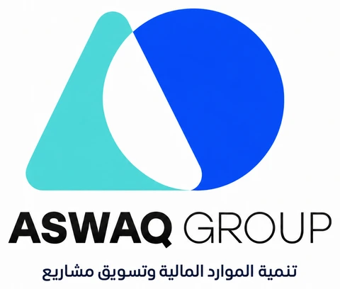

ابتكار وتطوير المشاريع
تحويل أفكار الجمعية إلى مشاريع ومبادرات قابلة للتنفيذ والتسويق، تسهم في تحقيق استدامتها المالية.
نطوّر مشاريع جمعيتكم ونجهّزها للرعاية ونسوّقها للشركات والجهات المناسبة لبناء فرص التمويل والشراكات.

تقدّم ASWAQ GROUP خدمات استشارية وتسويقية للجمعيات في السعودية. نساعد الجمعية في اختيار المشاريع المناسبة لقدراتها، وتجهيز ملفاتها، وتحديد الجهات التي تتوافق أولوياتها مع كل مشروع.
من تطوير الفكرة إلى تقديم المشروع للسوق وبناء فرص التمويل والرعاية والشراكة.
تحويل أفكار الجمعية إلى مشاريع ومبادرات قابلة للتنفيذ والتسويق، تسهم في تحقيق استدامتها المالية.
تسويق مشاريع الجمعية للشركات ورجال الأعمال لاستقطاب التمويل والرعايات والشراكات.
خطوات عملية لتنويع مصادر الإيرادات وبناء شراكات أكثر استدامة.
اقرأ المقال ←من عرض الاحتياج إلى صياغة قيمة واضحة تجذب الشريك المناسب.
اقرأ المقال ←أولويات عملية للبدء بسرعة وبناء مسار واضح للنمو.
اقرأ المقال ←للاستشارات في ابتكار وتطوير المشاريع وتسويقها واستقطاب الرعايات والشراكات.